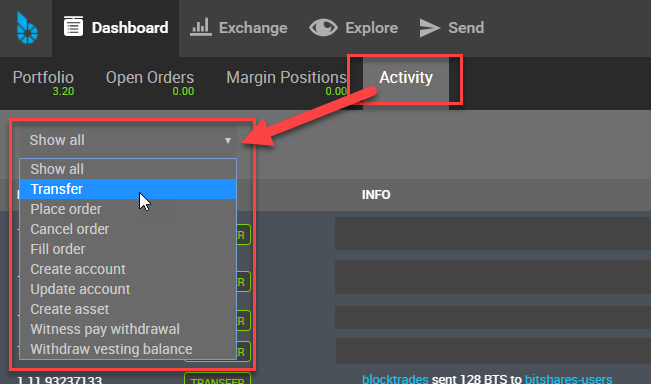

4. BitShares Wallet Features¶
Table of Contents
4.1. Quick Review Wallet Options¶

| Item name | note | |
|---|---|---|
| 1 | Dashboard | The Wallet Portfolio, Open Orders, Margin Positions, and Activity information |
| 2 | Exchange | BitShares Exchange, Trading information |
| 3 | Explore | BitShares Live Blockchain, Assets, Accounts, Witnesses members, Committee members, Markets, and Fee Schedule |
| 4 | Send | Opens a Send form. You can send funds to other BitShares Account Holders |
| 5 | A BitShares account name | A account name that the data shows on a Dashboard page |
| 6 | Key icon | By click, opens a login form. Locked/Unlocked Key icon shows if you’ve logged in the account currently |
| 7 | Side Menu icon | Side Menu icon opens the wallet other menus in a dropdown list |
| 8 | Asset Total | Currently showing in a Dashboard Total Assets |
| 9 | BitShares Wallet Version | The Release Version of BitShares UI Wallet |
| 10 | Latency | The delay of Network connection |
| 11 | Server Node name | A server node name that you are connecting |
4.1.1. Dashboard¶

Dashboard Tabs
| Tab name | note |
|---|---|
| Portfolio | Your Assets list. You can filter the assets and hide some assets if you don’t need to watch. |
| Open Orders | |
| Margin Positions | |
| Activity | Show your all transactions. (i.e., The below shows a type of transactions to choose from.) |
Activity - Filters
{kind=link}